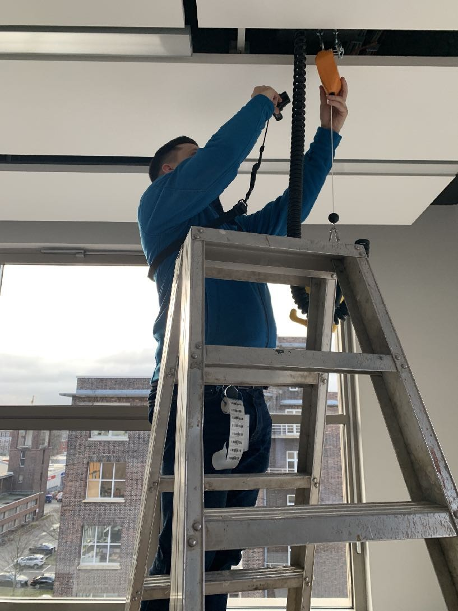
BuildingMinds is a Berlin-based proptech company digitizing property management. I co-founded their internal "App Factory," a small team tasked with building complementary mobile products. EQ Capture was our first: an iOS app that lets building surveyors digitize equipment data on the spot, instead of relying on paper, cameras, and spreadsheets.
To survey a building's equipment, a professional surveyor spends 3 to 4 days walking every floor carrying a paper map, a pen, a digital camera, and two backup batteries. For each item they find, they scribble on the map, photograph the equipment, and stick on a barcode label.
To remember which room they're in, they take a photo of the paper map with the camera. A digital photo of an analog map. That's the system.
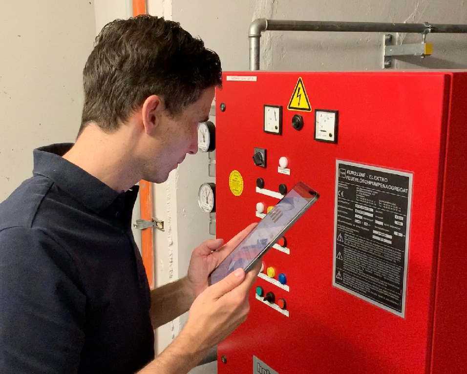
Surveyors at work: capturing equipment data on rooftops and in technical rooms across Hamburg and Frankfurt.
Back at the office, it gets worse. I invited Oliver, one of our surveyors, to our workspace and watched him sit at two screens, manually sorting hundreds of photos into rooms. Two days of focused, repetitive work. One mistake could mean traveling back to the building.
Total time per building: 4 to 5 days. The end result? An Excel file.
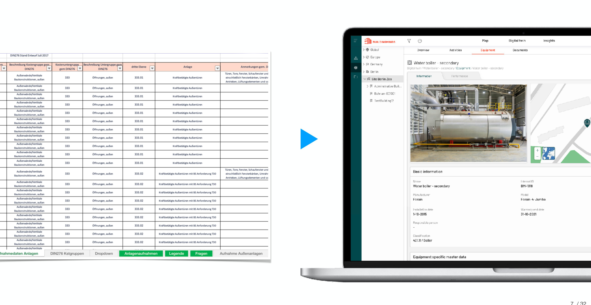
The old workflow ended in a spreadsheet. The new one feeds directly into BuildingMinds' platform.
I could have run this project from a desk in Berlin. Instead, I showed up at buildings with the surveyors. Over roughly 10 building scans, I carried the same floor plans, climbed the same stairs, and built direct relationships with the Westbridge team so they'd trust us with honest feedback.
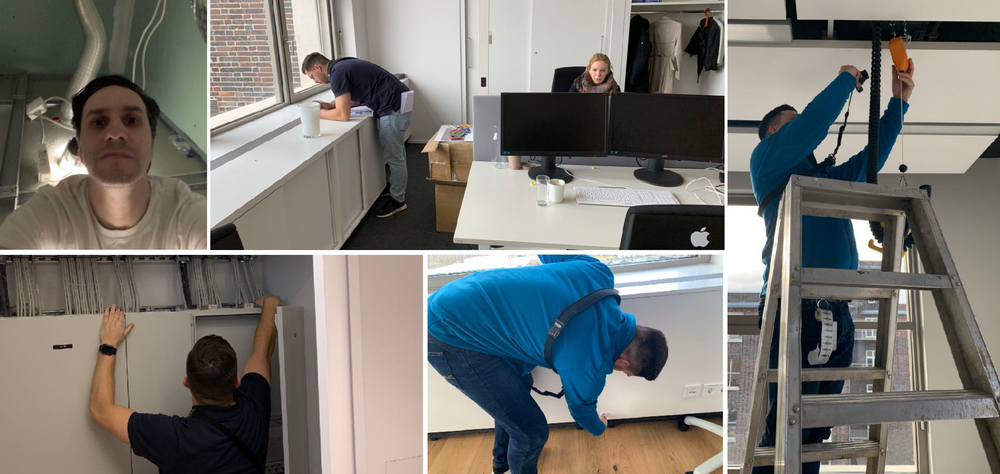
Job shadowing: crawling through hatches, reviewing floor plans, observing the full capture workflow firsthand.
My co-founders, Robert and Eddie, had never worked closely with a designer before. I pushed for direct user access not just to inform the design, but to demonstrate what design actually brings to a product team. Not by talking about it, but by bringing back insights that changed what we were building.
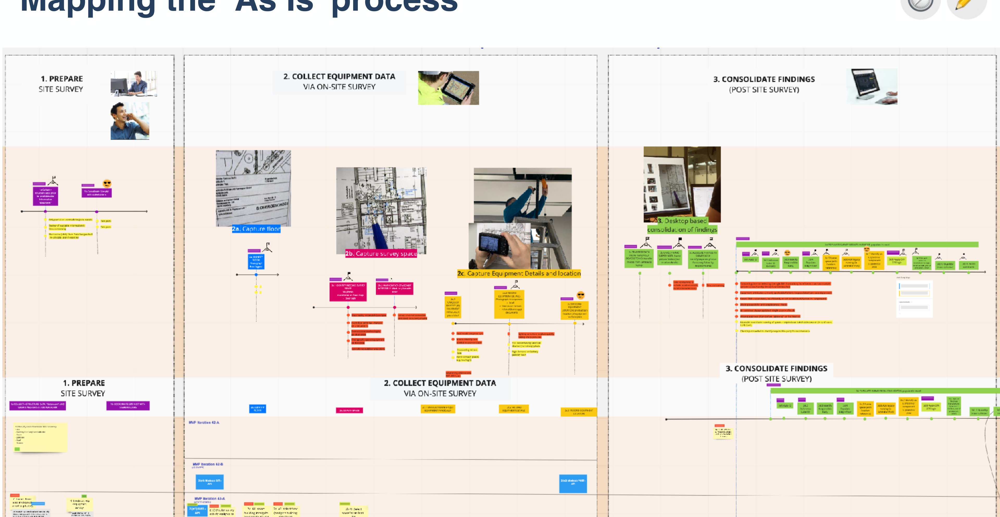
The full 'as-is' process: preparation, on-site data collection, and post-survey consolidation mapped end to end.
I assumed surveyors needed to see their current room on screen at all times. I explored persistent breadcrumbs, sidebars, and overlays. Testing revealed the opposite: surveyors always know where they are. They needed the app to keep up, not remind them.
Location became a smart default inside the form. The app auto-populated the current room and carried it forward. Less clutter, fewer taps, and a product that felt aware of the workflow.
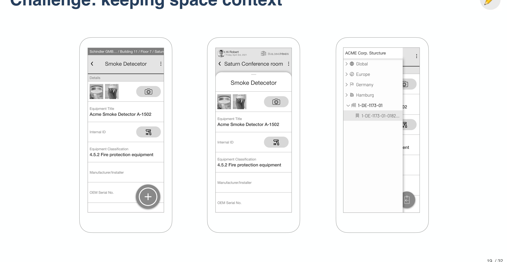
Three explored approaches: breadcrumb bar, room-centric overlay, and sidebar tree. None of them shipped.
The first form copied the field order from the surveyors' Excel sheets. On mobile, this meant constant switching between camera, keyboard, and date picker.
I regrouped fields by input method instead of data hierarchy. Camera fields together, pickers together, text together. The keyboard stopped bouncing. A small change that smoothed out the entire capture rhythm.
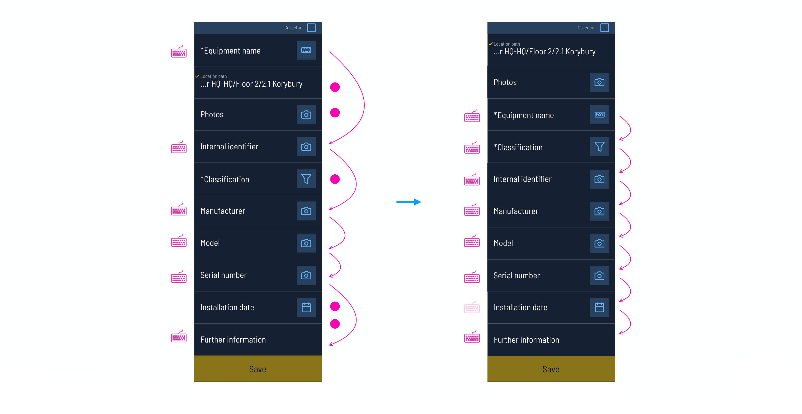
Before and after: fields reordered by input method to reduce constant keyboard/camera switching.
When budget blocked access to real sites, I printed 15 fake equipment sheets, taped them around a meeting room, and ran the capture flow. This scrappy simulation surfaced the keyboard problem and let us test with untrained colleagues, since the app needed to work beyond expert surveyors.
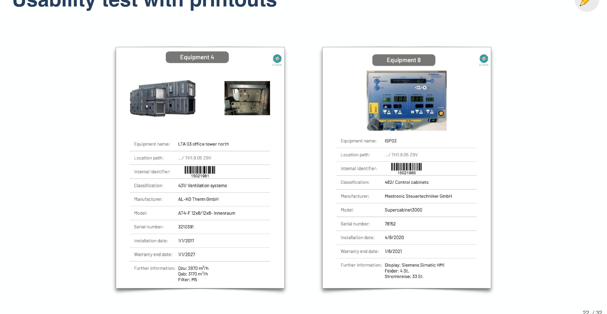
Printed equipment cards used for in-office usability testing. No building required.
The app shipped to the iOS App Store. I built a mobile component library adapting BuildingMinds' design language, and kept the core flow simple: pick your building, select a room, and start capturing. Photos, barcodes, and structured data all sync directly to the platform.
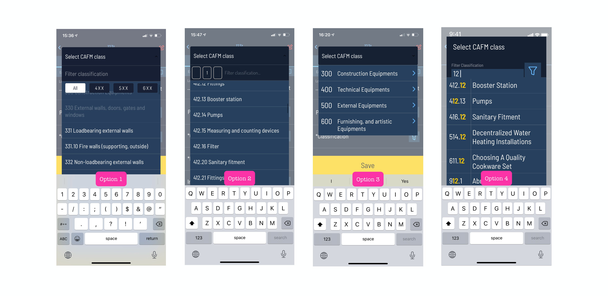
Four explored approaches to filtering 600+ equipment classifications.
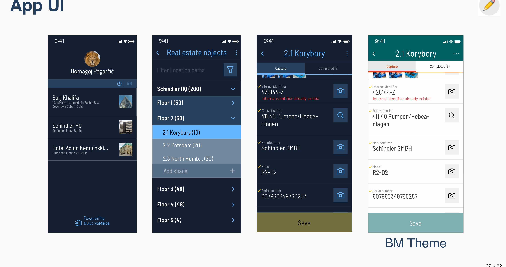
Final UI: project selection, building navigation, capture form, and BuildingMinds-themed variant.
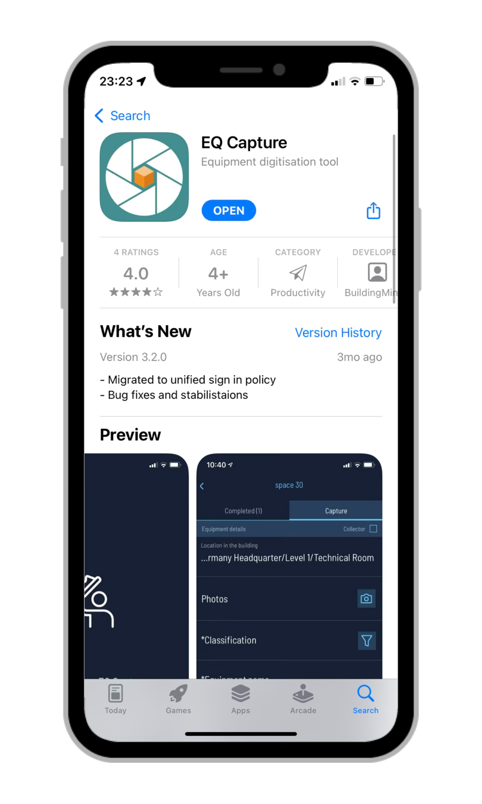
EQ Capture live on the iOS App Store, rated 4.0.
The product was sunset due to a partnership change, a business decision outside our team's control. It's still one of the projects I'm proudest of.
By the end, Robert and Eddie told me this was the first time they understood the value of having a designer on the team. That meant more to me than any metric.
What I'd do differently: invest earlier in making design's impact visible to leadership. The work spoke for itself within the team, but I learned that great design also needs someone selling its value to the people who decide what lives and what doesn't.